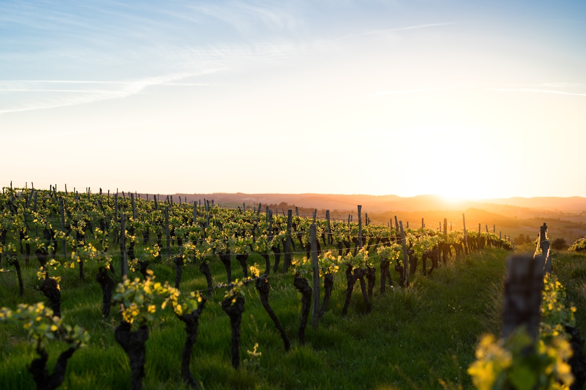
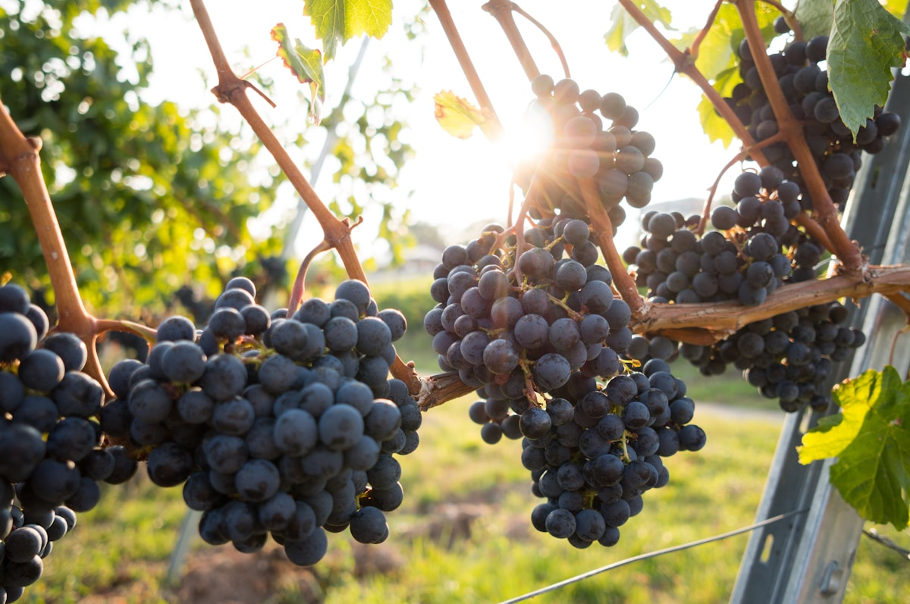

News & Events
新闻动态
庄园故事 · 行业资讯 · 获奖荣誉
庄园故事 · 行业资讯 · 获奖荣誉

在刚刚落幕的 2025 年国际冰酒大赛中，美桦君昱威代尔冰葡萄酒从来自 12 个国家的 200 余款参赛作品中脱颖而出，荣获金奖。
评审团主席评价道："这款来自中国集安的冰酒展现了惊人的纯净度与平衡感，金黄琥珀色泽迷人，蜜糖与热带水果香气令人沉醉，代表了东方冰酒的顶尖水准。"



夏日午后，在庄园露台品鉴冰酒与起泡酒的清爽组合，搭配应季水果甜品。
参与一年一度的葡萄采收，亲手采摘成熟的酿酒葡萄，体验从田间到酒窖的完整旅程。
见证冰葡萄在 -8°C 严寒中的冰冻采收，品尝第一口新鲜酿制的冰酒原浆。
推出新春限定品鉴套餐，以冰酒搭配传统中式佳肴，探索餐酒搭配的东方美学。
"中国集安正在成为世界冰酒地图上不可忽视的新星，美桦君昱是其中最耀眼的代表。"
2024 年 12 月
"北纬 41° 的东方奇迹 — 美桦君昱冰酒以纯净的风味表达获得评委一致推荐。"
2024 年 9 月
"从集安走向世界，美桦君昱用十余年的坚守证明了中国冰酒的无限可能。"
2024 年 6 月
第一时间了解庄园最新动态、新品发布与品鉴活动资讯。